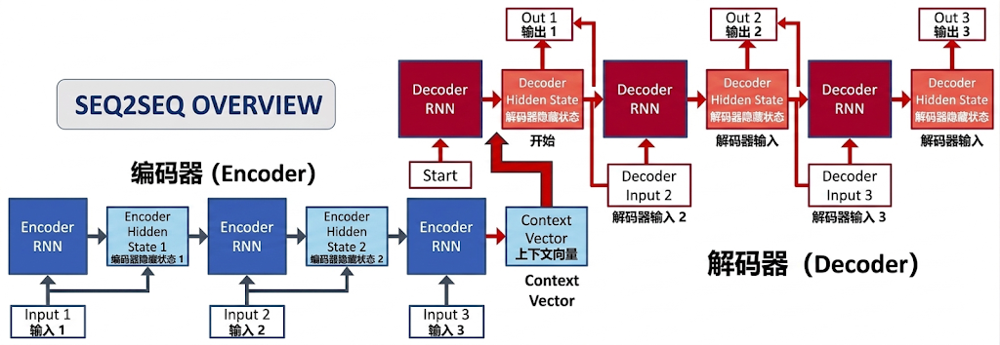
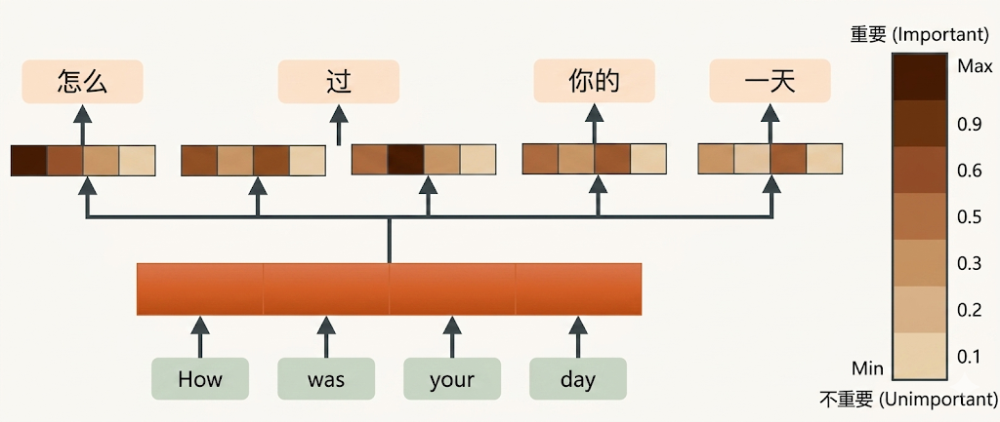
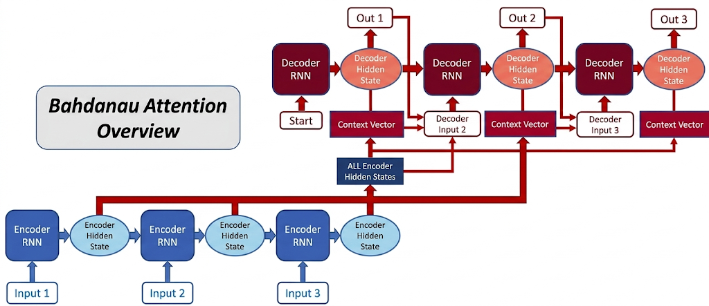
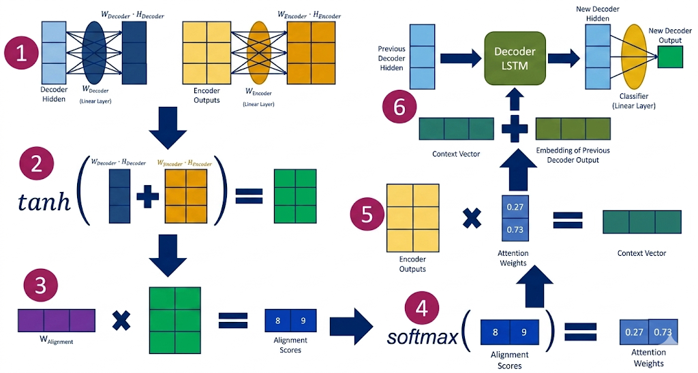

“人类大脑有100万亿个参数，所以如果我们想模拟它，模型至少需要同样规模。”-2017年NIPS大会演讲者&诺贝尔物理学奖&图灵奖获得者&深度学习之父Geoffrey Hinton
基于LSTM的编码器-解码器框架-seq2seq模型，首次实现了端到端的序列到序列映射，为机器翻译、文本摘要等任务提供了统一的解决方案。

基础seq2seq模型的核心思想，是先由编码器将整个输入序列编码成一个固定长度的上下文向量，再由解码器基于这个向量逐步生成输出序列。
这种设计在短句和结构相对简单的任务中表现不错，但随着任务复杂度提升，这种架构在突破传统对齐方法的同时，也暴露出三大核心缺陷：
1. 信息压缩与长序列失真
固定长度的上下文向量成为模型性能的刚性瓶颈。编码器需将任意长度的输入序列压缩至固定维度，导致长文本中细粒度语义的丢失（如超过30词的句子BLEU分数下降约20%）。
这种信息压缩类似于用一句话概括整部小说的核心情节，必然牺牲细节--例如在翻译“他因对鱼类过敏，坚持十年不食用任何海鲜”这类长句时，模型可能丢失“十年”的时间限定或“海鲜”的类别信息。
我们首先来看这样一个例子：
输入英文句子："The cat, which had been wandering in the garden for hours searching for a place to hide its prey, finally found a secluded spot under the old oak tree."
基于RNN的seq2seq模型可能翻译为："那只猫在花园里游荡了许久，终于找到了一个隐蔽的地方。"
这个长句子的问题在于丢失了“寻找藏猎物的地方”“老橡树下”等细节，导致语义不完整。
2. 单向编码与动态感知缺失
传统编码器采用单向RNN/LSTM结构，仅能捕捉前向依赖关系。当处理倒装句或逻辑嵌套结构时，如中文倒装句“所以不吃鱼，他因为过敏”，模型因无法反向关联后置的否定原因：“过敏” ，而错误生成肯定语义：“他吃鱼”。
这种缺陷源于RNN的“短期记忆”特性--随着时间步增加，早期输入的语义权重被后续信息稀释，导致关键逻辑断裂。
我们再来看一个例子，我们输入一个倒装句的中文句子："他因为对鱼过敏，所以不吃鱼。"
传统单向RNN可能翻译为："So he eats fish, because he is allergic to it."
这是错误的："所以不吃鱼，他因为对鱼过敏。"
这里RNN对因果倒置了。而正确英文翻译为："He does not eat fish because he is allergic to it."
3. 静态对齐与上下文割裂
解码器生成每个目标词时，如果始终依赖同一个固定上下文向量，那么无论当前在生成主语、动作还是原因解释，模型看到的其实都是同一份被整体压缩过的信息。
这种静态对齐机制忽略了词语间的动态关联性，例如翻译“猫追老鼠”时，“追”应更关注“猫”与“老鼠”而非其他无关词汇，但传统模型没有这种“每一步按需取信息”的机制，它只能反复使用同一个静态上下文向量。
所以，基础seq2seq的真正问题，不是它完全没有上下文，而是它只能反复使用同一份静态上下文，无法根据当前生成步骤动态调整关注重点。

上述局限性催生了动态感知范式的变革需求，2015年，Bahdanau、等人发表了论文《Neural Machine Translation by Jointly Learning to Align and Translate》，这篇论文的核心贡献在于首次将注意力机制引入神经机器翻译（NMT），这个机制不但解决了传统编码器-解码器模型的长序列信息瓶颈问题，还为后续技术，如Transformer奠定了基础，间接影响了OpenAI的问世。
Bahdanau注意力模型主要的核心思想是通过软对齐策略重构序列建模逻辑：
软对齐（Soft Alignment）：指模型在生成每个目标词时，不是只盯着输入序列中的一个位置，而是给所有输入位置分配一组权重，再把这些位置按权重加权组合起来。它叫“软”，是因为关注不是非黑即白的硬选择，而是一种连续的概率分配。
Bahdanau Attention 直接借鉴了人类视觉注意力机制的生物学原理。正如人类阅读时会自然聚焦关键词，如“过敏”与“不吃鱼”的关联，而非均匀关注所有文字。
这种选择性信息处理方式启发了模型设计：通过计算“注意力权重/重要性”模拟人类对输入序列的动态关注。
我们再来看看Bahdanau注意力模型的结构，Bahdanau注意力模型由双向编码器、动态注意力层、解码器组成。

编码器相当于是模型的“信息提炼器”，负责将输入序列转化为包含上下文信息的隐藏状态（隐藏层输出）序列。
Bahdanau注意力模型中的编码器主要由双向RNN构成，其包含两个方向相反的RNN：
（1）正向RNN 从左到右处理句子，捕捉前文信息。例如，处理句子“他因为对鱼过敏”时，“过敏”的隐藏状态会包含“因为”的信息；
（2）反向RNN 则是从右到左处理句子，捕捉后文信息。例如，“过敏”的隐藏状态还会关联到后文的“所以不吃鱼”。
最后将正向和反向的隐藏状态拼接，形成完整的上下文表示。例如，“过敏”的最终隐藏状态 = [ 正向“过敏”->；反向“过敏”← ]。
这就像两个人同时读同一段文字，一个从左到右读，一个从右到左读，然后把两人的笔记合并成一份完整报告。
解码器是“信息翻译器”，生成目标序列，并在每一步动态选择关键信息。
在解码过程中，允许解码器动态关注源句子的不同部分，建立源词与目标词之间的"软对齐"，英文名soft alignment。
解码器采用用编码器的最后一个隐藏状态，作为初始状态输入到解码器中，例如："他因为对鱼过敏，所以不吃鱼”，用编码器得到的“不吃鱼”的隐藏状态（隐藏层输出）作为解码器的初始输入。
然后解码时，如“does not eat”，从编码器的所有隐藏状态中筛选相关部分，比如重点看“过敏”和“不吃鱼”的位置，这就是动态上下文机制的核心。
最后将动态生成的上下文向量、当前隐藏状态和上一个词输入解码器，生成下一个词。
这就好比训练翻译员学翻译，在翻译写英文时，每写一个单词就翻看中文笔记，但只看和当前翻译最相关的部分。
这是模型的“信息筛选器”，决定解码时关注输入序列的哪些部分。

计算步骤：
1. 相似度计算：用解码器的当前隐藏状态（如生成“does not eat”时的状态）和编码器的每个隐藏状态（如“过敏”）计算相似度，得分越高表示相关性越强。 相似度的计算公式为：
$$ \text{对齐分数} = \text{重要性权重}^\top \times \tanh\big( \text{解码器投影矩阵} \times \text{解码器上一状态} + \text{编码器投影矩阵} \times \text{编码器隐藏状态} \big) $$又写作：
$$ e_{ij} = \mathbf{v}^\top \tanh(\mathbf{W}_a \mathbf{s}_{i-1} + \mathbf{U}_a \mathbf{h}_j) $$2. 权重归一化：通过Softmax将相似度分数转化为概率分布，其总和为1。例如，“过敏”和“不吃鱼”可能占90%的权重。
3. 加权求和：用权重对编码器的隐藏状态加权求和，最终生成动态上下文向量。公式简化：
$$ \text{注意力权重} = \text{Softmax}(\text{解码器状态} \cdot \text{编码器隐藏状态}) \\ $$ $$ \text{上下文向量} = \sum (\text{注意力权重} \times \text{编码器隐藏状态}) $$输入中文句子：“他因为对鱼过敏，所以不吃鱼”，通过双向RNN进行编码；
每个词的最终隐藏状态为双向状态拼接：$h_j = [\vec{h}_j; \overleftarrow{h}_j]$，最终形成完整的编码器隐藏状态序列 $\mathbf{H} = [h_1, h_2, ..., h_n]$（$n$ 为输入词数），每个 $h_j$ 都包含该词的局部语义和全局上下文信息。
取编码器的双向最终状态（前向最后一个状态 $\vec{h}_n$ + 后向第一个状态 $\overleftarrow{h}_1$ 拼接），作为解码器的初始隐藏状态 $\mathbf{s}_0$，为首次解码提供“全局初始状态”；
解码器的初始输入为预设的起始符（bos），触发第一个目标词（如英文“He”）的生成流程。
这是注意力机制发挥作用的关键，每生成一个目标词都要重复以下3个细分步骤，实现“按需关注”：
步骤1：计算注意力权重（软对齐）
以解码器前一时刻隐藏状态 $\mathbf{s}_{t-1}$ 为“查询向量”，编码器所有隐藏状态 $\mathbf{H}为$“键向量”，通过Bahdanau模型的加性评分函数计算相关性得分：
$$ \text{对齐分数} = \text{重要性权重}^\top \times \tanh\big( \text{解码器投影矩阵} \times \text{解码器上一状态} + \text{编码器投影矩阵} \times \text{编码器隐藏状态} \big) $$对所有得分用softmax归一化，得到注意力权重 $\alpha_{t,j}（\sum_j \alpha_{t,j}=1）$，权重越高表示当前解码步骤越需要关注输入序列的第 $j$ 个词。
步骤2：生成动态上下文向量
用注意力权重对编码器隐藏状态序列 $\mathbf{H}$ 加权求和：$\mathbf{c}_t = \sum_j \alpha_{t,j} h_j$；又写作：
$$ \text{注意力权重} = \text{Softmax}(\text{解码器状态} \cdot \text{编码器隐藏状态}) \\ $$该向量是“定制化”的：即每个目标词对应一个专属 $\mathbf{c}_t$ 上下文向量，只聚合当前最相关的输入语义，而不是整句共享一个固定向量。
步骤3：解码器更新与词生成
将“上一个生成词的词嵌入”、“当前上下文向量 $\mathbf{c}_t$”、“前一隐藏状态 $\mathbf{s}_{t-1}$”三者拼接，输入解码器核心模块 $RNN/GRU$，计算新的隐藏状态 $\mathbf{s}_t$；
对 $\mathbf{s}_t$ 通过softmax层输出目标词概率分布，选择概率最高的词作为当前步生成结果。
当解码器生成预设的结束符（$eos$） 时，判定翻译完成；
若未生成结束符，但生成的词数已达到预设最大长度（如50词），则强制终止，避免无限循环。
假设你正在参加一场中英读书会，任务是将中文小说翻译成英文。传统翻译模式（传统seq2seq）像是只有一个人独自完成，他需要一口气读完整个段落（编码为固定向量），再凭记忆复述（解码）。
但遇到倒装句时，例如中文句子："他因为对鱼过敏，所以不吃鱼。"传统翻译可能错误生成："He eats fish because he is allergic to them."（逻辑矛盾）
之所以出现这种逻辑矛盾，原因是长句中后置的“不吃鱼”被压缩到固定向量中丢失导致“记不清”，模型仅记住前半句“对鱼过敏”。
而Bahdanau模型则像一场三人协作读书会，分工明确且动态互补，两位阅读者（即双向编码器）、翻译官（解码器）。
其中正向阅读者从左到右阅读，标注“他->因为->过敏->所以->不吃鱼”。
而反向阅读者：从右到左阅读，标注“不吃鱼←所以←过敏←因为←他”。
最后两人将笔记拼接，形成完整上下文手册，例如“过敏”的笔记包含前文“因为”和后文“所以不吃鱼”； 不吃鱼”的笔记关联前文“过敏”。这种机制对应着双向RNN生成隐藏状态 $h_j = [\overrightarrow{h_j}; \overleftarrow{h_j}]$
而翻译员则是一个解码器，它每翻译一个英文词时，会动态翻阅手册的不同部分，从而进行注意力权重的分配。
例如翻译“does not eat”时，它会优先查看手册中“过敏”和“不吃鱼”的笔记，而非无关内容，进而生成逻辑正确的句子："He does not eat fish because he is allergic to them."
我们以倒装句："他因为对鱼过敏，所以不吃鱼。"为例，说明训练Bahdanau注意力模型的过程，实现翻译："He does not eat fish because he is allergic to them."
样本构建：
核心样本为目标句对：“他因为对鱼过敏，所以不吃鱼”->“He does not eat fish because he is allergic to them”。
分词与编码：
（1）中文按语义分词为：
（2）英文分词为：
然后将这些中英文通过类似word2vec中的embedding技术分别映射为词嵌入向量，例如620维。嵌入的概念前文多次提及，不重复解释。
序列补齐：
对批次内长度不一的句子补零（PAD），后续通过mask屏蔽补零位置的注意力计算，避免干扰例句的有效语义。
模型参数初始化：
核心组件参数：初始化双向编码器（Bi-LSTM）、带注意力的解码器（LSTM/GRU）、注意力层参数（可学习矩阵 $\mathbf{W}_a、\mathbf{U}_a$，向量 $\mathbf{v}_a$）、词嵌入矩阵、输出层权重 $\mathbf{W}_o$ 等；
初始状态设置：
编码器前向/后向LSTM的隐藏状态、细胞状态初始化为全零向量；解码器初始隐藏状态暂定为随机值（训练中通过编码器输出动态更新）。
训练的核心目标是让模型同时学会“倒装语序下的语义对齐”和“准确翻译”，全程通过端到端反向传播优化所有参数，具体分为4步：
捕获中文全量语义（突破传统RNN单向局限）
输入句子：
[他] [因为] [对鱼过敏] [所以] [不吃鱼]
正向编码（左 -> 右）：
h1-> h2-> h3-> h4-> h5->
[他]->[因为]->[对鱼过敏]->[所以]->[不吃鱼]
反向编码（右 -> 左）：
h1← h2← h3← h4← h5←
[他]←[因为]←[对鱼过敏]←[所以]←[不吃鱼]
↑
实际读取方向是从右往左
每个位置最终表示：
h1 = [h1-> ; h1←]
h2 = [h2-> ; h2←]
h3 = [h3-> ; h3←]
h4 = [h4-> ; h4←]
h5 = [h5-> ; h5←]
这个过程的重点，不是简单“读两遍句子”，而是让每个位置都同时拥有左边上下文和右边上下文。 比如“对鱼过敏”这个位置，在双向编码之后，不再只知道前面有“因为”，也知道后面有“所以不吃鱼”。
“对鱼过敏”这个位置：
正向看到的是：
[他] -> [因为] -> [对鱼过敏]
反向看到的是：
[不吃鱼] ← [所以] ← [对鱼过敏]
所以这个位置最后得到的表示，不只是：
“过敏”
而更接近：
“因为……过敏……所以不吃鱼”
注意力动态对齐+倒装语序适配（核心创新）
解码器以“起始符”为起点，逐词生成英文，每一步都通过注意力机制“跨位置匹配”中文语义，完美适配英文“结果在前、原因在后”的倒装逻辑，整个宏观过程：
解码器当前时刻 t：
上一个隐藏状态 s_(t-1)
+
上一个生成词 y_(t-1)
+
编码器所有隐藏状态 H=[h1,h2,h3,h4,h5]
↓
计算注意力权重 α_(t,1)...α_(t,5)
↓
加权求和得到上下文向量 c_t
↓
更新当前隐藏状态 s_t
↓
输出当前词 y_t
编码器读完整句后，手里有：
h1, h2, h3, h4, h5
把这些信息中的“全局语境”抽出来
↓
构造解码器初始状态 s0
可以理解为：
编码器先把“这整句话大概在说什么”
交给解码器
↓
解码器再从这个起点开始逐词往外写英文
当前要生成的词：He
解码器当前状态：s0
和每个输入位置做相关性匹配：
s0 ↔ h1（他） 分数最高
s0 ↔ h2（因为） 分数较低
s0 ↔ h3（对鱼过敏） 分数较低
s0 ↔ h4（所以） 分数较低
s0 ↔ h5（不吃鱼） 分数较低
Softmax后得到注意力：
[0.78] [0.06] [0.05] [0.04] [0.07]
↑
主要看“他”
于是当前上下文向量 c1 更接近主语语义
最终输出：
He
当前已经生成：
He
现在要继续生成：
does not eat fish
解码器当前状态：s1
和每个输入位置做匹配：
s1 ↔ h1（他） 低
s1 ↔ h2（因为） 中
s1 ↔ h3（对鱼过敏） 中
s1 ↔ h4（所以） 中
s1 ↔ h5（不吃鱼） 最高
Softmax后得到注意力：
[0.05] [0.08] [0.14] [0.11] [0.62]
↑
重点看“不吃鱼”
于是当前上下文向量 c2 更突出“结果动作”
最终输出：
does not eat fish
注：实际上不会一次性生成 “does not eat fish”这么多词，decoder是逐词生成的过程，这里为了便于教学上不反复赘述，假设一次性生成。
当前已经生成：
He does not eat fish
现在要生成：
because
解码器当前状态：s2
和每个输入位置做匹配：
s2 ↔ h1（他） 低
s2 ↔ h2（因为） 最高
s2 ↔ h3（对鱼过敏） 次高
s2 ↔ h4（所以） 中
s2 ↔ h5（不吃鱼） 中
Softmax后得到注意力：
[0.04] [0.51] [0.18] [0.14] [0.13]
↑
重点看“因为”
于是当前上下文向量 c3 更集中体现“原因引导”
最终输出：
because
当前已经生成：
He does not eat fish because
现在要继续生成：
he is allergic to it
解码器当前状态：s3
和每个输入位置做匹配：
s3 ↔ h1（他） 中
s3 ↔ h2（因为） 低
s3 ↔ h3（对鱼过敏） 最高
s3 ↔ h4（所以） 低
s3 ↔ h5（不吃鱼） 中
Softmax后得到注意力：
[0.16] [0.07] [0.56] [0.05] [0.16]
↑
重点看“对鱼过敏”
于是当前上下文向量 c4 更集中体现“过敏原因”
最终输出：
he is allergic to it
整个解码过程如果连起来看，就是：
中文源句：
[他] [因为] [对鱼过敏] [所以] [不吃鱼]
英文生成过程：
He ← 重点看 [他]
does not eat fish ← 重点看 [不吃鱼]
because ← 重点看 [因为]
he is allergic to it ← 重点看 [对鱼过敏]
这就是“动态软对齐”：
英文按英文的顺序生成，
但每一步都能去中文里找当前最相关的位置
重复上述循环数万次，模型经历三个阶段：
| 对比维度 | 传统单向RNN | 基础Seq2Seq（无注意力） | Bahdanau注意力模型 |
|---|---|---|---|
| 语义捕获方式 | 单向处理（左->右），例句中“因为”的语义无法传递到“不吃鱼”后，因果逻辑断裂 | 编码器将例句压缩为单一固定向量，“原因”“结果”语义混合，信息严重丢失 | 双向编码器捕获每个token的完整上下文（如“因为”含前后语境），语义无衰减 |
| 语序适配能力（倒装句） | 仅按中文顺序匹配英文，无法处理英文“原因后置”，输出常为“He because is allergic to fish does not eat” | 强制顺序对齐，生成“because”时只能匹配中文后续token（如“所以”），倒装翻译语序错乱 | 软对齐机制，跨位置匹配（生成“because”时对齐“因为”），完美适配倒装语序 |
| 信息传递瓶颈 | 长句语义衰减严重，例句“对鱼过敏”的语义到解码后期几乎丢失 | 固定向量瓶颈，所有语义挤在一个向量中，无法区分“因为”“所以”的逻辑差异 | 动态上下文向量（每个英文token对应专属向量），按需提取语义，无瓶颈 |
| 训练目标 | 仅优化“翻译错误”，不关注对齐逻辑 | 仅优化“翻译错误”，对齐由编码器固定向量间接决定 | 联合优化“对齐错误+翻译错误”，注意力权重与翻译质量相互促进 |
| 例句翻译典型输出 | “He because to fish allergic, so not eat fish”（语序混乱+语法错误） | “He is allergic to fish because does not eat them”（因果颠倒） | “He does not eat fish because he is allergic to them”（语序正确+语义精准） |
Bahdanau模型的训练核心是“让模型自主学会倒装语序下的动态语义对齐”：通过双向编码解决传统RNN的语义衰减问题，通过可微分注意力机制打破基础Seq2Seq的固定向量瓶颈，最终实现“对齐与翻译的联合优化”--这也是它能精准处理“中文原因在前、英文原因在后”这类倒装翻译的关键，而这正是以往模型无法突破的核心痛点。
双向RNN（BiRNN）：一种同时从左到右、又从右到左读取序列的编码方式。它的核心价值，不是“读两遍”本身，而是让每个位置的隐藏状态同时拥有前文和后文信息。这样模型在理解“过敏”时，不仅知道前面有“因为”，也知道后面有“所以不吃鱼”。
软对齐（Soft Alignment）：指模型在生成每个目标词时，不是只盯着输入序列中的一个位置，而是给所有输入位置分配一组权重，再把这些位置按权重加权组合起来。它叫“软”，是因为关注不是非黑即白的硬选择，而是一种连续的概率分配。
注意力权重（Attention Weights）：表示当前解码步骤下，模型对输入各位置“该看多少”的分配结果。它本质上是一组经过Softmax归一化的分数，总和为1。权重越高，说明当前生成这个目标词时，该输入位置越关键。
动态上下文向量（Dynamic Context Vector）：由当前时刻的注意力权重，对编码器所有隐藏状态加权求和得到的上下文表示。它不是整句固定不变的一份摘要，而是“当前这个目标词专属的一份临时摘要”。这正是Attention区别于基础seq2seq的关键：上下文不再是一份固定答案，而是每一步重新计算一次。